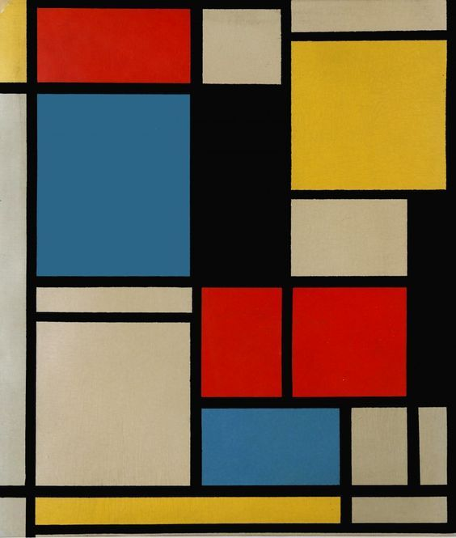
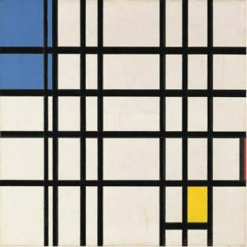
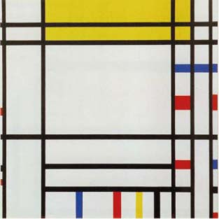
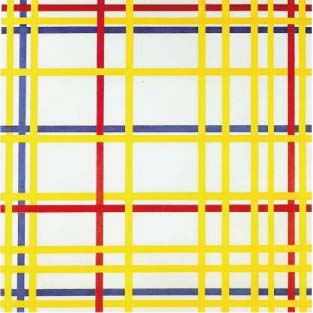

historia
artistas
galería
STIJL
contacto
neo
plasticismo
el arte puro,
la expresión del color,
y la abstracción de las formas.

  
"El fin de los fundadores del nuevo arte plástico es hacer un llamamiento a todos los que creen en la reforma del arte y de la cultura para aniquilar tales obstáculos, del mismo modo que ellos mismos aniquilaron en su arte la forma natural que obstaculiza una autentica expresión del arte, ultima consecuencia de toda cognición artística."